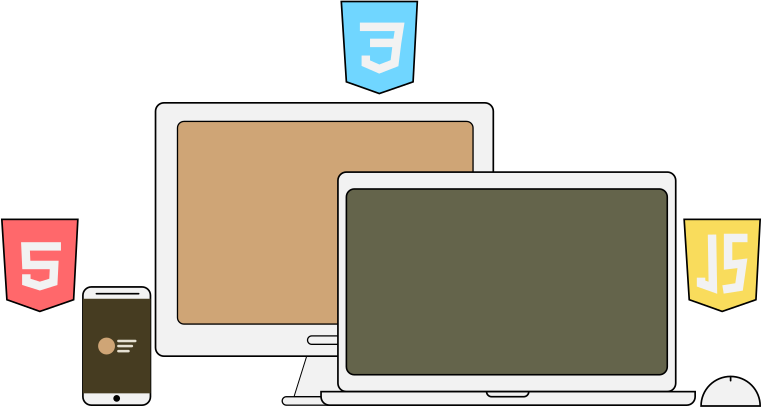

Full-Stack Developer
Developer in progress. Always learning. Caffeine-driven. Gamer.
Hi, I'm John Jomar
I’m a soon-to-be Computer Science graduate who enjoys solving problems through code, giving life to designs, and building systems that work under the hood. While I started with full-stack development, I’ve grown especially interested in the logic, structure, and functionality behind the scenes.
Full-Stack Developer
I enjoy bringing designs to life with code and building the backend logic that makes everything work smoothly.
Languages I use:
HTML, CSS, JavaScript, Git, Java, Python
Dev Tools:
- VsCode
- GitHub
- BootStrap
My projects
Here are a few of my projects that I’ve worked on during my time in my University, including ones I made for activities and others I made during my free time.